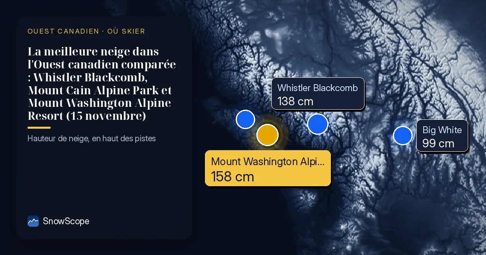

La meilleure neige dans l'Ouest canadien comparée : Whistler Blackcomb, Mount Cain Alpine Park et Mount Washington Alpine Resort (15 novembre)
Mount Washington Alpine Resort possède la neige la plus profonde au sommet : 158 cm. Whistler Blackcomb suit de près avec 138 cm, tandis que la tempête récente à Mount Cain Alpine Park—66 cm en trois jours—a constitué une couche solide en altitude malgré une couverture globalement moins importante.
Consultez les prévisions neige en temps réel pour Whistler Blackcomb sur l'application SnowScopeHauteurs de neige, alertes poudreuse et carte 3D, gratuitement.
Quelle altitude offre la meilleure neige en ce moment
À Whistler Blackcomb, la neige se concentre surtout au-dessus de 1 456 m : le sommet (2 259 m) compte environ 103 cm, les pentes intermédiaires (1 456 m) environ 48 cm, et la base (653 m) presque rien. Le constat est clair : allez en altitude.
Mount Cain Alpine Park raconte une autre histoire. Sa tempête récente signifie que le sommet (1 616 m) a maintenant 66 cm, mais la partie médiane (1 403 m) reste fine avec 23 cm. La base (1 190 m) est minimaliste avec 4 cm.
Mount Washington Alpine Resort affiche la profondeur la plus fiable : 158 cm au sommet (1 569 m), bien que la base et la partie médiane soient minimes. Cette station profite de rester plus souvent au-dessus de la limite de neige mouillée.
| Station | Hauteur de neige | Neige fraîche, 72 h | Attendu, jours suivants | Sommet |
|---|---|---|---|---|
| Whistler Blackcomb | 138 cm | 82 cm | 13 cm | 2 259 m |
| Mount Cain Alpine Park | 97 cm | 66 cm | 9 cm | 1 616 m |
| Mount Washington Alpine Resort | 158 cm | 9 cm | 11 cm | 1 569 m |
| Big White | 99 cm | 4 cm | 4 cm | 2 271 m |

L'orientation des pentes compte maintenant
Le 15 novembre, la limite de congélation à Whistler Blackcomb oscille entre 1 040 m et 1 580 m. Cela signifie que les pentes sous 1 100 m verront de la neige mouillée ou de la gadoue l'après-midi, tandis que les faces nord au-dessus de 1 400 m restent hivernales toute la journée.
Mount Cain Alpine Park se situe plus bas globalement, donc sa limite de congélation (900 m à 1 290 m) laisse la base en zone humide. Skiez le sommet et les pentes face nord ; réservez les descentes face sud pour tôt le matin ou évitez-les.
La base élevée de Mount Washington Alpine Resort (1 081 m) lui donne un avantage : plus de terrain reste au-dessus de la limite de congélation plus longtemps, bien que les deux stations vous demandent encore de bien choisir votre exposition.
Neige fraîche : où elle a tombé le plus fort
Whistler Blackcomb a reçu la neige fraîche la plus spectaculaire : 82 cm sont tombés en trois jours, dont 49 cm en 24 heures jusqu'au 15 novembre. C'est le genre d'apport qui remet le ski de début de saison à zéro.
Mount Cain Alpine Park a reçu 66 cm en 72 heures, presque entièrement—47 cm—en une seule journée. La station se situe au-dessus d'une grande partie de sa région, donc cette neige s'est bien tassée et a rapidement approfondi la couverture existante.
Mount Washington Alpine Resort a reçu seulement 8 cm en 24 heures et 9 cm en trois jours. Son avantage réside dans la profondeur de l'ancienne neige, non dans une tempête récente. La carte montre une accumulation régulière, pas un événement orageux.
Ce qui vient : la perspective cinq jours
Le 18 novembre, Whistler Blackcomb ajoutera 13 cm supplémentaires. Cela la maintient en lice. Mount Cain Alpine Park en recevra 9 cm, et Mount Washington Alpine Resort 11 cm. Aucun de ces chiffres n'est énorme ; l'action est derrière vous, pas devant.
La limite de congélation baisse brusquement au cours des deux prochains jours aux trois stations. Le 18 novembre, elle tombe près ou en dessous des altitudes de base. Cela signifie que plus de terrain se consolidera et gèlera fermement—une bonne nouvelle si vous aimez le maïs printanier solide, moins utile si vous recherchez de la poudreuse.
Comparaison avec les hivers passés en novembre
Mount Cain Alpine Park performe bien au-dessus de la normale : à mi-montagne (1 403 m), elle a 32 cm aujourd'hui contre une moyenne typique de 26 cm le 15 novembre. Elle est plus profonde que 27 des 46 derniers mois de novembre à cette date—un rare avantage de début de saison.
Big White affiche 11 cm à mi-montagne (1 891 m) aujourd'hui, plus du double de sa moyenne de 5 cm pour cette date. L'accumulation précoce s'accélère ici plus vite que la tendance sur 30 ans.
Whistler Blackcomb, en contraste, se situe en dessous de sa moyenne : 31 cm à mi-montagne (1 456 m) contre une normale de 98 cm. La tempête a aidé, mais novembre est encore jeune. La neige profonde arrive plus tard en saison ici.
Conseils aux skieurs
- Skiez au-dessus de 1 400 m à Whistler Blackcomb ou sur les pentes du sommet à Mount Washington Alpine Resort pour trouver la couverture la plus stable et la plus profonde. Évitez complètement la zone de base.
- Le terrain face nord aux trois stations retiendra mieux la neige pendant le cycle de réchauffement des prochains jours. Les pentes face sud ne se skient que tôt le matin.
- La neige de début de saison adhère mal au sol : attendez-vous à des rochers et de l'herbe cachés juste sous la surface à toute station. Restez sur les pistes balisées et préparées sauf si vous avez vérifié le danger d'avalanche dans le bulletin officiel.
- Mount Cain Alpine Park et Big White ont souvent des files d'attente aux remontées plus courtes que Whistler Blackcomb. La neige qu'elles ont reçue était similaire ; votre journée sur les pentes peut être plus calme.
- Avant de vous rendre à une station, consultez son site pour les ouvertures de remontées et la disponibilité des pistes. La profondeur de neige sur la carte ne confirme pas quelles pentes sont préparées.
À propos de ces chiffres
Les hauteurs de neige des stations sont la neige la plus épaisse sur le haut du domaine à la date indiquée ; ce sont des estimations pour une zone, pas une mesure en un point. Les prévisions peuvent changer. Consultez toujours le bulletin d'avalanche officiel avant le hors-piste.
Bulletins d'avalanche officiels: Avalanche Canada
Citer ce bulletin
Pour la recherche, l'enseignement ou la presse : chiffres et graphiques réutilisables librement sous CC BY 4.0 avec cette citation.
SnowScope (2026), La meilleure neige dans l'Ouest canadien comparée : Whistler Blackcomb, Mount Cain Alpine Park et Mount Washington Alpine Resort (15 novembre), https://snowscope.app/blog/fr/2026/11/western-canada-where-to-ski-best-snow-15-november-2026.html, consulté le 2026-11-15
SnowScope (Atlas Labs). (2026, November 15). La meilleure neige dans l'Ouest canadien comparée : Whistler Blackcomb, Mount Cain Alpine Park et Mount Washington Alpine Resort (15 novembre). SnowScope snow reports. https://snowscope.app/blog/fr/2026/11/western-canada-where-to-ski-best-snow-15-november-2026.html
BibTeX
@misc{snowscope2026westerncanadawheretoskib,
author = {{SnowScope (Atlas Labs)}},
title = {La meilleure neige dans l'Ouest canadien comparée : Whistler Blackcomb, Mount Cain Alpine Park et Mount Washington Alpine Resort (15 novembre)},
year = {2026},
month = nov,
howpublished = {\url{https://snowscope.app/blog/fr/2026/11/western-canada-where-to-ski-best-snow-15-november-2026.html}},
note = {Published 2026-11-15 19:47 UTC; accessed 2026-11-15}
}· CC BY 4.0 · Méthodes, données et outils →
Whistler Blackcomb : neige et température selon l'altitude, cet hiver vs l'hiver dernier (outils) →
Suivre Whistler Blackcomb
Gratuit : un message quand la neige arrive, et la météo chaque matin.
Autres bulletins neige

Mount Washington retient 145 cm le 8 novembre, le plus profond de l'Ouest canadien, mais le niveau de congélation montera au-dessus du sommet d'ici le 11 novembre.

À Big White le 15 novembre, les pentes supérieures retiennent 68 cm près du sommet tandis que la base reste dégagée ; un gradient vertical extrême typique du début de saison.

Mount Washington Alpine Resort affiche 104 cm sur les pentes supérieures aujourd'hui. Whistler Blackcomb domine la région avec 136 cm. Données du 18 novembre 2026.